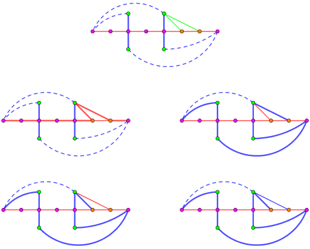
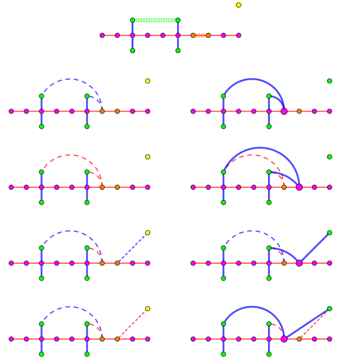

有一个 $n$ 个点的完全图，每条边染红色或蓝色。
已知对所有 $1 \leq i < k$，连接 $i$ 和 $i + 1$ 的连边为红色。
你需要找到一条由 $k + 1$ 个点 $k$ 条边组成的路径，满足所有边的颜色相同。
你需要实现下面的过程：
std::vector <int> find_longer_path(int n, int k)
其中 $n$ 是完全图的节点数，$k$ 是输入的参数。在所有的数据中，保证 $k \leq \dfrac 23 n$，你需要返回一个长度为 $k + 1$ 的点的序列，表示你找到的满足条件的路径。
如果图中不存在这样的路径，你的函数的返回值应当是一个不包含元素的 std::vector。
你可以调用以下函数和交互库进行交互：
bool query(int u, int v)
表示询问点 $u$ 和点 $v$ 间的颜色，当函数返回值为 true 时表示该连边为红色，否则为蓝色。你需要保证 $1 \leq u, v \leq n$ 且 $u \neq v$。
非(xiang)常(bu)奇(dao)怪的图论构造题……
由于过程过于奇特，那就直接照抄题解喽~
番外：首先可以猜想，当 $k \leq \dfrac 23n$ 时，一定可以且存在多项式算法对同色链进行 "扩展" (延长)。如果没这个条件的话，连续调用 $n$ 次算法就可以寻找最长链，而这目前是一个 NPC 问题。
考虑这样的一个过程：
我们定义交错路 $C$ 为图中的一条简单路径 (不含 $1, k$)，满足路径上所有边都是蓝色，且路径的两个端点不在原来的链中，且如果一个点在原来的链中，它的邻点不在原来的链中。定义它的长度 $\left| C \right|$ 为路径中点的数量 (容易发现 $\left| C \right|$ 一定是奇数)。
我们考虑两条不相交的交错路 $A, B$，分为如下两种情况：
$\left| A \right| + \left| B \right| \geq k - 2$。
此时，将这个点的两端通过 $1$ 和 $k$ 串联，可以得到一个长度 $\geq k$ 的圈。
如果这个圈中有红边，那么一定是 $\left( 1, v \right)$ 和 $\left( k, v \right)$ 型的，则容易找到一条点数为 $k + 1$ 的链。
如果这个圈中所有边都是蓝边，那么容易找到一条点数为 $\geq k$ 的蓝链。
如果 $\left| A \right| + \left| B \right| = k - 2$，那么这还是不够的。
考虑 $A \cup B$ 与 $\left\{ 2, 3, \cdots, k - 1 \right\}$ 交集的大小，由交错路的定义知它应该等于 $\dfrac {\left| A \right| + \left| B \right| - 2} 2 \leq \dfrac k2 - 2$。
于是中间的 $k - 2$ 个点中只有 $\dfrac {k - 2} 2 - 1$ 个点被使用，由抽屉原理知存在相邻两个点与 $A, B$ 均不交，设为 $r, s$。
任取蓝圈中一点 $v$，如果 $\left( r, v \right), \left( v, s \right)$ 中有蓝边，则可以找到一条长度为 $k + 1$ 的蓝链，否则可以找到一条长度为 $k + 1$ 的红链，如下图所示：
于是这种情况我们已经完成。
$\left| A \right| + \left| B \right| < k - 2$。
此时，我们考虑不断将链进行 "扩展" (延长)，使它们的长度和不小于 $k - 2$。
设 $A$ 的端点为 $x$，$B$ 的端点为 $y$。和上面类似，有 $\left| \left( A \cup B \right) \cap \left\{ 2, 3, \cdots, k - 1 \right\} \right| = \dfrac {\left| A \right| + \left| B \right| - 2} 2$。
由容斥原理，知 $\left| A \cup B \cup \left\{ 2, 3, \cdots, k - 1 \right\} \right| = \left| A \cup B \right| + \left| \left\{ 2, 3, \cdots, k - 1 \right\} \right| - \left| \left( A \cup B \right) \cap \left\{ 2, 3, \cdots, k - 1 \right\} \right| = \left| A \right| + \left| B \right| + \left( k - 2 \right) - \dfrac {\left| A \right| + \left| B \right| - 2} 2 = \dfrac {\left| A \right| + \left| B \right| - 2} 2 + k < \dfrac 32 k - 2$。
因此，$\left| A \cup B \cup \left\{ 1, 2, \cdots, k \right\} \right| = \dfrac {\left| A \right| + \left| B \right| + 2} 2 + k < \dfrac 32 k$，于是集合 $V \left( G \right) \setminus \left( A \cup B \cup \left\{ 1, 2, \cdots, k \right\} \right)$ 中存在至少一个点 $z$。
同理，仿照 1 部分的分析，可知 $2 \sim k - 1$ 中存在相邻两个点与 $A, B$ 均不交，设为 $r, s$。
首先，$x, y, z$ 三点中，任意一点与 $r, s$ 两点中至少有一条边是蓝的，否则，可以得到一条长度为 $k + 1$ 的红链 (参考上图左上部分)。
考察 $\left( x, r \right), \left( y, r \right)$，如果它们都是蓝的，则可以将 $A$ 和 $B$ 通过 $r$ 串接起来，$z$ 作为新的交错路。
如果它们都是红的，则 $\left( x, s \right), \left( y, s \right)$ 均为蓝，转化为刚才的情形。
若既有红又有蓝，则说明 $r, s$ 中任一点都向 $x, y$ 连出一条蓝边。
考虑 $\left( z, s \right)$ 的颜色，如果 $\left( z, s \right)$ 为红，则 $\left( z, r \right)$ 为蓝，于是 $z$ 可通过蓝边连向 $r, s$ 中一点，再连向 $x, y$ 中的一点。
这四种情况如下图所示：
无论是哪一种情况，我们的都成功地将两条交错路的长度和增加了 $2$。
于是，不断重复这个过程，就可以转化为第 1 种情形，从而问题解决。
最后来分析一下时间复杂度 (或者说调用次数吧)。
当 $\left| A \right| + \left| B \right| < k - 2$ 时，每 "扩展" 一次，需要询问 $2 \sim 3$ 条边的颜色 (见上图左边部分)，总的扩展次数为 $\left \lceil \dfrac {k - 4} 2 \right \rceil$，扩展完毕后进入第一部分 ($\left| A \right| + \left| B \right| \geq k - 2$)，这部分至多询问两次。
因此，在假设 $1 \sim k$ 外任意一点向链内 $r, s$ 相邻两点的边中，至少一条是蓝的成立的前提下，总询问次数不超过 $3 \left \lceil \dfrac {k - 4} 2 \right \rceil + 2 = 3 \left \lceil \dfrac k2 \right \rceil - 4$。
不过，我们需要时刻验证这个假设是否成立，因此，我们需要对最后的每条边的颜色进行检验：
如果有一条边被检验出来是红的，那么一定是当时我们假设某条红边的 "邻边" 是蓝边是错的。
因此，需要找到 "询问过的" 相邻红边，从而改成正确的红链。
这样的检验需要进行 $k$ 次。于是总询问次数为 $3 \left \lceil \dfrac k2 \right \rceil + k - 4$，貌似超了？不过，每当我们询问 $3$ 次扩展出一条道路后，一定有一条边是不用检验的 —— 换句话说，这条边是已询问过的。
为了方便实现，我们可以使用记忆化的思想，将询问过的边记录下来，这样下次询问同一条边的时候就不计询问次数了。
这个时候，再来分析上面这张图，每种 case 的右边除了原来的红链和交错路外，出现的新的边数均不超过 $4$，因此我们每扩展一条边，至多询问 $4$ 条新边的颜色。
于是，"扩展" 过程中，总的询问次数就不会超过 $4 \left \lceil \dfrac {k - 4} 2 \right \rceil = 4 \left \lceil \dfrac k2 \right \rceil - 8$。
进入第一部分后，先检验四个端点是否都是蓝边，需要 $4$ 次，最后当 $k$ 为偶数时还需要一部特殊处理，也要 $2$ 次。
于是总询问次数不超过 $4 \left \lceil \dfrac k2 \right \rceil - 8 + \left( 4 + 2 \right) = 4 \left \lceil \dfrac k2 \right \rceil - 2 \leq 4 \cdot \dfrac {k + 1} 2 - 2 = 2 k$，刚好可以通过 (不过这个分析并不是紧的)。
#include "graph.h"
#include <bits/stdc++.h>
#define EB emplace_back
enum color {BLUE, RED};
typedef std::vector <int> vector;
typedef std::pair <int, int> pr;
typedef std::map <pr, color> map;
bool used[4054];
map M;
inline void join(vector &A, const vector &B) {A.insert(A.end(), B.begin(), B.end());}
inline int available(int K) {
int i;
for (i = 2; i < K - 1 && (used[i] || used[i + 1]); ++i);
return assert(i != K - 1), i;
}
inline color safe_query(int u, int v) {
assert(u != v);
if (u > v) std::swap(u, v);
map::iterator it = M.find(pr(u, v));
return it == M.end() ? M[pr(u, v)] = (query(u, v) ? RED : BLUE) : it->second;
}
inline bool check_known_red(int u, int v) {
assert(u != v);
if (u > v) std::swap(u, v);
map::iterator it = M.find(pr(u, v));
return it != M.end() && it->second == RED;
}
#define query safe_query
vector find_longer_path(int n, int K) {
int i, j, x, y, z, stamp = K; color cx, cy;
vector A[2], *B = A + 1, simple(K); A->EB(++stamp), B->EB(++stamp);
for (; (int)(A->size() + B->size()) < K - 2; ) {
i = available(K), z = ++stamp;
cx = query(x = A->back(), i), cy = query(y = B->back(), i);
if (cx == cy)
j = cx == RED,
used[i + j] = true, A->EB(i + j), std::reverse(B->begin(), B->end()), join(*A, *B), B->assign(1, z);
else
j = query(z, i + 1) == BLUE,
used[i + j] = true, A[(cx == RED) ^ j].EB(i + j), A[(cx == RED) ^ j].EB(z);
}
std::iota(simple.begin(), simple.end(), 1);
if (query(K, A->front()) == RED) return simple.EB(A->front()), simple;
if (query(K, B->back()) == RED) return simple.EB(B->back()), simple;
std::reverse(simple.begin(), simple.end());
if (query(1, A->back()) == RED) return simple.EB(A->back()), simple;
if (query(1, B->front()) == RED) return simple.EB(B->front()), simple;
std::reverse(simple.begin(), simple.end());
// check
assert(A->size() & B->size() & 1);
for (const vector &V : {*A, *B})
for (i = 1; i < V.size(); i += 2)
for (int _ : {V[i - 1], V[i + 1]})
if (z = -1, query(_, V[i]) == RED) {
if (check_known_red(_, V[i] - 1)) z = V[i] - 1;
if (check_known_red(_, V[i] + 1)) z = V[i];
assert(~z);
return simple.insert(simple.begin() + z, _), simple;
}
// join
A->EB(1), join(*A, *B), A->EB(K);
std::reverse(A->begin(), A->end());
if (A->size() == K + 1) return *A;
assert(A->size() == K);
i = available(K), cx = query(A->back(), i), cy = query(A->back(), i + 1);
return cx == RED && cy == RED ? (simple.insert(simple.begin() + i, A->back()), simple) : (A->EB(i + (cx == RED)), *A);
}
坑1：注意操作时不要让数组越界。
坑2：在最终检验出红边的时候，注意要向红边端点相邻的点所对应的边均检验一次，此时才能保证一定有一条已知红边 (check_known_red)，从而找到红链。